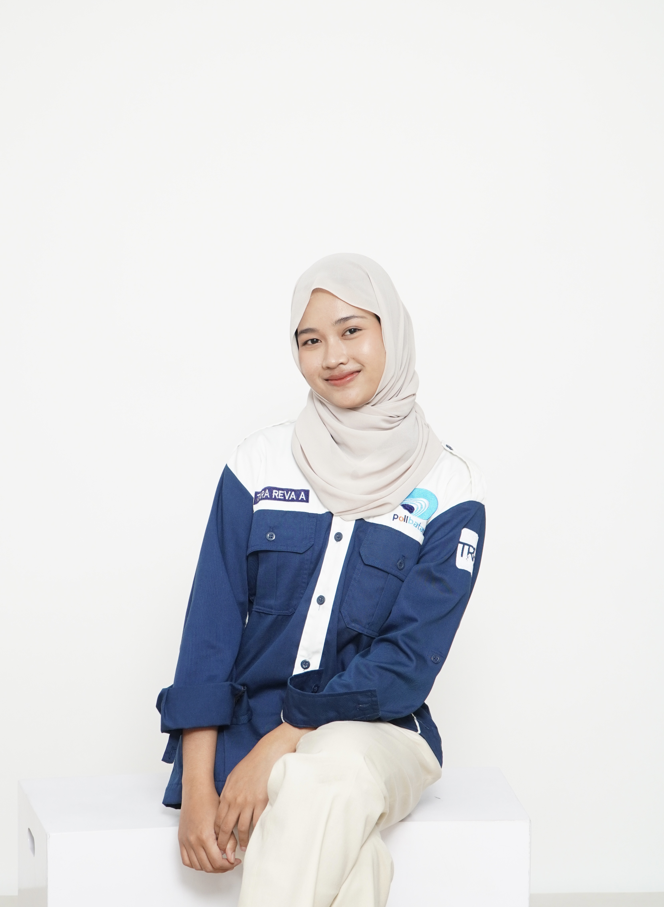

Personal Branding
Mahasiswa Teknik Informatika yang fokus pada Web Development, UI Design, dan pengembangan sistem modern.
Nama saya Tara Reva Apriyani, mahasiswa D4 Program Studi Teknologi Rekayasa Perangkat Lunak. Saya memiliki minat besar pada pengembangan website, desain antarmuka modern, serta sistem informasi berbasis teknologi. Saya senang belajar hal baru dan berkembang di dunia IT.
Alamat
Batam
taraaprynii220406
GitHub
tarareva840
D4 Teknologi Rekayasa Perangkat Lunak
2025 - Sekarang
Sedang menempuh pendidikan di bidang software engineering, web development, database, dan pengembangan sistem modern.
Sekolah Menengah Kejuruan
2022 - 2025
Mempelajari dasar teknologi, komputer, serta keterampilan yang mendukung dunia kerja dan pendidikan lanjut.